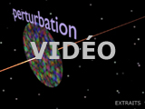

|
|
Navig.
page/section


_____
|
|
Pages soeurs
I, A propos des liants
II, Bulles, siccativ., struct. élec.
III, Caséine, phosphore, dissociation
IV, Les orbitales
V, L'aérogel
VI, Polarisation de la lumière
VII, Sfumato et diffusion Rayleigh
VIII, Les interférentielles
IX, Dextrine, farine et chiralité
X, L'ocre bleue
XI, Les métamatériaux
XII, Le jaunissement
XIII, Laser etc.
XIV, L'holographie
XV, L'holographie numérique
XVI, Extérieur, intérieur, chaux
XVII, L'électrolyse et les ions
XVIII, L'électricité, un peu plus loin
XIX, Oxydation, métaux
XX, Les échelles
XXI, Nature et évolution des résines
XXII, Le mouillage pigmentaire
XXIII, La molette
XXIV, Blanche neige
XXV, Lumière et matière
XXVI, Magnétisme
XXVII, Ambre et vieilles branches
XXVIII, L'origami miroir
XXIX, Le feu
XXX, Peau du métal
XXXI, La ville en un souffle
XXXII, Oxyder des matériaux
XXXIII, Ocre bleue, une solution
_____
|
Copyright © www.dotapea.com
Tous droits réservés.
Précisions cliquer ici
|
|
| |
|
|
Les dialogues sur la physique-chimie
appliquée aux arts
Chapitre
XXX
La peau du métal |
 |
dial dial
dial
|
Ce court chapitre est un retour
sur un sujet qui a été abordé dans deux autres chapitres des Dialogues.
Attention, il est un peu
"technique". Il nous a cependant paru s'imposer car il fallait une mise au point sur
des sujets abordés
antérieurement, auxquels nous donnons ici une articulation cohérente au travers
du concept de "peau du métal".
Cette mise au point nécessaire,
parsemée de quelques "points forts" - notamment sur la
"transition" - pourrait aussi être un point de départ pour d'autres travaux.
Voici donc la trentième
discussion entre Jean-Louis, physico-chimiste au CNRS, et Emmanuel, candide.
|
|
Emmanuel :
Jean-Louis tu évoques dans une discussion récente (L'origami miroir,
lire le passage)
l'impossibilité d'un champ électrique dans un matériau métallique
conducteur, ce
qui fait qu'un photon ne peut pas "entrer" dans un métal.
Mais dans le chapitre XVII tu dis que dans un
fil électrique il y a des photons qui transmettent de l'information (lien).
Donc ma question est comment cela
s'articule ?
Est-ce que tu veux dire qu'un champ
électrique ne peut pas entrer dans un métal mais que dans un métal il
peut y en avoir un et que la particularité du métal est d'avoir une...
disons une sorte de cuirasse ?
Jean-Louis :
Ce n'est pas un sujet facile.
Les photons sont le vecteur de l'interaction
électromagnétique, donc il y en a littéralement partout. Y compris dans
les fils métalliques bien sûr.
|
|
|
|
|
Vis à vis des champs électriques
"extérieurs", les conducteurs métalliques se comportent comme des
écrans, c'est la cage de Faraday.
Les champs extérieurs s'annulent dans
une zone de la surface appelée peau, plus ou moins épaisse selon les
métaux, la fréquence, etc.
Si tu appliques une différence de
potentiel aux deux bouts d'un fil, c'est différent car les électrons du
fil subissent ce champ dans le fil même. Cependant, les courants qui
vont circuler dans ces fils seront eux aussi cantonnés à cette fameuse
épaisseur de peau.
Il existe cependant des cas où l'intérieur du fil "ne sert
à rien", tout le courant circulant en surface. C'est une des raisons pour
lesquelles on étame, argente ou dore la surface de certains fils de
cuivre qui travaillent à haute fréquence. Pour le courant "ordinaire" à
50Hz l'épaisseur de peau est, de mémoire, d'environ 1cm. Donc tout le
courant passe "dans" le fil.
[La peau et
l'évanescence]
Emmanuel :
Dans le chapitre XXVIII, tu évoques [lien
cité ci-dessus] une zone où les photons venant de l'extérieurs
donnent à l'approche du métal une onde évanescente (voir aussi une
évocation des ondes
longitudinales, chap. XXV). Cette onde correspond-elle à la "cage de
Faraday" que tu évoques ?
|
|
|
Expérience de la cage de
Faraday au
Palais de la Découverte.
Voir aussi ce
lien vers une recherche Google sur "cage de Faraday". |
|
Jean-Louis : J'aurais envie de dire non. En
général la cage de Faraday est utilisée pour écranter des champs statiques, même si elle
fonctionne aussi avec les champs alternatifs, en acceptant des
limitations en fonction de la fréquence et de la nature du matériau.
|
|
|
Le terme écranter réfère
au fait de faire écran |
|
Parenthèse |
|
|
L'effet de peau qui limite
la circulation des courants alternatifs à une zone proche de la
surface des conducteurs résulte de l'interaction des courants
induits (par les champs variables) avec le courant principal. |
|
Les photons, qui sont un champ électromagnétique variable de très très
haute fréquence ne pénètrent pas les matériaux conducteurs. C'est
d'ailleurs pour ça que les métaux ont cet aspect métallique, brillant. |
|
|
|
Aucune quantité physique ne peut passer
brutalement de non-nul à nul. Donc la lumière qui est à l'extérieur du
métal ne disparaît pas brutalement à la surface. Elle pénètre "un peu"
dans le métal, sur une certaine distance. Ce peu de lumière qui pénètre
dans le métal s'appelle "onde évanescente".
|
|
|
Une onde qui fait transition |
|
Emmanuel :
D'accord, on ne peut pas assimiler le phénomène de Faraday à l'onde
évanescente. Sinon métaphoriquement, comme tu le faisais en début de
chapitre.
Je reviens juste sur un point : tu écris "Les photons, qui
sont un champ électromagnétique variable de très très haute
fréquence (...)", mais comme beaucoup de non-initiés je pense, j'ai
une tendance paresseuse à les voir seulement comme agents et pas comme des champs eux-mêmes. Tu
as sûrement raison mais cette précision est-elle indispensable, ne
risque-t-elle pas de faire cafouiller les candides dans mon genre ?
Jean-Louis : C'est vrai que c'est pas
facile, mais précisément c'est la dualité onde-corpuscule, les photons
sont les deux à la fois et c'est parce qu'ils sont une onde qu'ils sont
réfléchis par les métaux. |
|
|
Le photon vu lui-même
comme un champ électromagnétique |
|
Emmanuel :
Dans l'un des premiers chapitres (le
sixième), on voit bien en effet, notamment dans la vidéo reprise ci-contre,
qu'il y a un champ autour du photon lui-même... ou plutôt, le photon se déplace
dans son propre champ, autour de sa trajectoire.
Et il est lui-même agent d'un champ.
Drôle d'animal, ce petit photon. |
|
|
 |
|
Chapitre
suivant |
Retour
début de page
|
|

 Communication
Communication
|
|